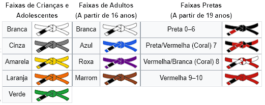

Este artigo ou seção cita fontes, mas que não cobrem todo o conteúdo. Ajude a inserir
referências.
Conteúdo não verificável pode ser removido.—Encontre fontes: ABW • CAPES • Google (N•L•A) (Abril de
2012)
Este artigo ou seção cita fontes, mas que não cobrem todo o conteúdo. Ajude a inserir
referências.
Conteúdo não verificável pode ser removido.—Encontre fontes: ABW • CAPES • Google (N•L•A) (Abril de
2012)
 Nota: Se procura o livro escrito por Hélio Gracie, veja Gracie Jiu-Jitsu (livro).
Nota: Se procura o livro escrito por Hélio Gracie, veja Gracie Jiu-Jitsu (livro).
Graduação
Adotam-se as seguintes divisões de faixas no
jiu-jitsu desportivo brasileiro para seus praticantes, conforme suas
experiências e habilidades: e cada associação, federação ou demais
tem seu edital Particular, sancionado por uma Lei Federal nº
9 615 de 24 de março de 1998, mais conhecida como Lei
Pelé.

Branca (iniciante, qualquer idade)
Cinza (4 a 6 anos)
Amarela (7 a 15 anos)
Laranja (10 a 15 anos)
Verde (13 a 15 anos)
Azul (16 anos ou mais (até 4 grau))
Roxa (16 anos ou mais (até 4 grau))
Marrom (18 anos ou mais (até 4 grau))
Preta (19 anos ou mais (até o sexto grau))
Vermelha e Preta (sétimo grau -Título de mestre)
Vermelha e Branca (oitavo grau) (Criada pela IBJJF em 2012)
Vermelha (nono grau) Título de Grão-Mestre - Vários Mestres Brasileiros (somente alcançado por
brasileiros).
Vermelha décimo grau. O último grau foi dado somente aos criadores do Jiu-Jitsu brasileiro;
somente os mestres Carlos Gracie, George Gracie, Oswaldo Gracie, Gastão Gracie, Hélio
Gracie - estes membros da Família Gracie -, Oswaldo Fadda (in
memoriam), Julio Secco e Armando Wriedt (ainda em vida).
Os critérios de graus na faixa preta variam de acordo com
suas respectivas ligas, associações, federações e Confederações por Edital desde a Lei de 1998:
1º ao 3º - dois a três anos cada;
4º ao 6º - três a cinco anos cada;
7º ao 8º - cinco a dez anos cada (Mestre);
9º - Grau Alcançado Apenas por Brasileiros (Grande Mestre);
10º - Reservado apenas aos criadores da modalidade.